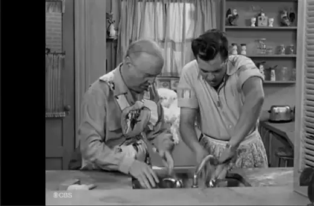

Cuban Mojo Chicken

“Men Are Messy” (Season 1, Episode 8)
In this classic episode, it's men vs. women in the battle of housekeeping,
and the Ricardos’ apartment gets divided in two. When Fred visits Ricky on
“his side,” Ricky offers him some leftover chicken, but the catch is,
the kitchen is on Lucy's side of the apartment!
Inspired by Ricky's willingness to feed his pal, this classic Cuban chicken dish
is marinated and roasted, and just as delicious no matter which side of the apartment
it’s served on.
Makes 8 servings
Ingredients:
- 1 whole chicken, cut into pieces
For the marinade:
- ¼ cup olive oil
- ¼ cup orange juice
- ¼ cup freshly squeezed lime juice
- 6 garlic cloves, minced
- 2 teaspoons cumin
- 2 teaspoons oregano
- 2 teaspoons salt
- ½ teaspoon freshly ground black pepper
Steps:
- To make the marinade, in a small bowl, stir together
the olive oil, orange juice, lime juice, garlic, cumin, oregano,
salt, and pepper.
- Place the chicken in a sealable bag and pour in the marinade.
Keep in the refrigerator for 6 hours or overnight.
- Preheat the oven to 375°F. Place the chicken in a roasting pan
and discard the marinade.
- Bake for 1 hour or until an instant-read thermometer reads 165°F.
- Let rest for 5 minutes, then serve.
Return to homepage